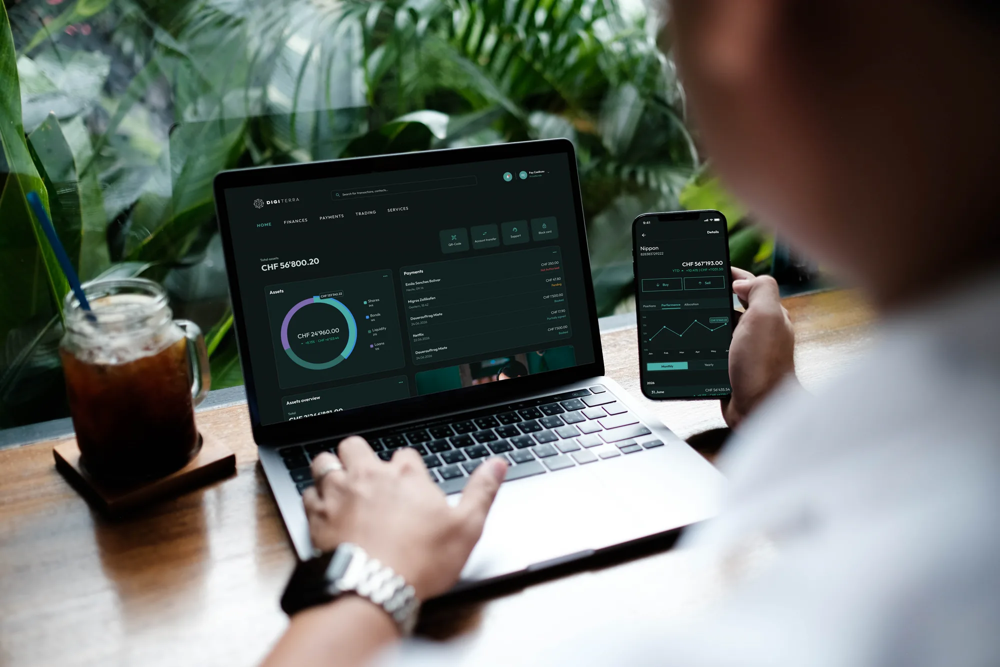
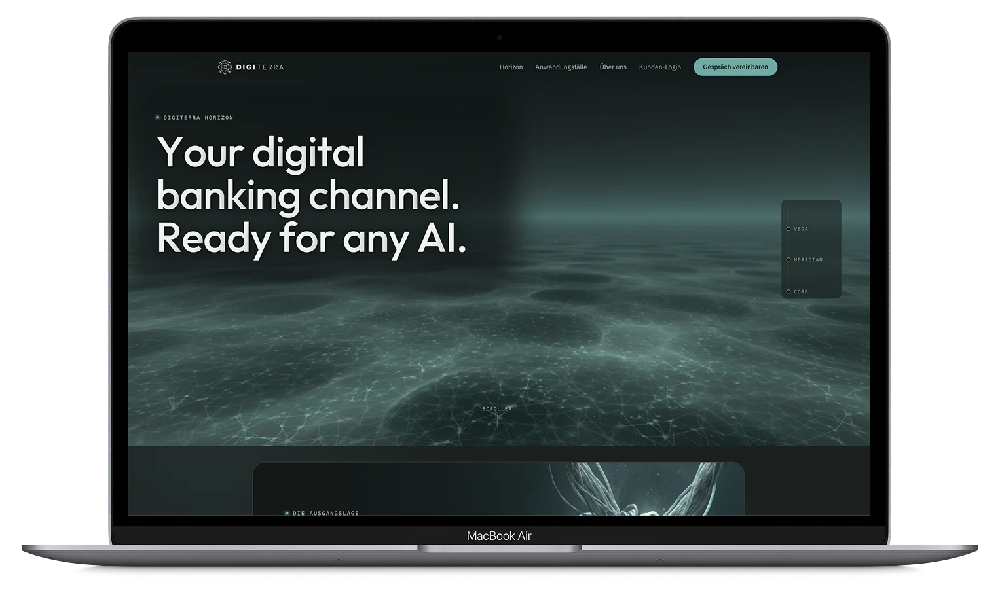
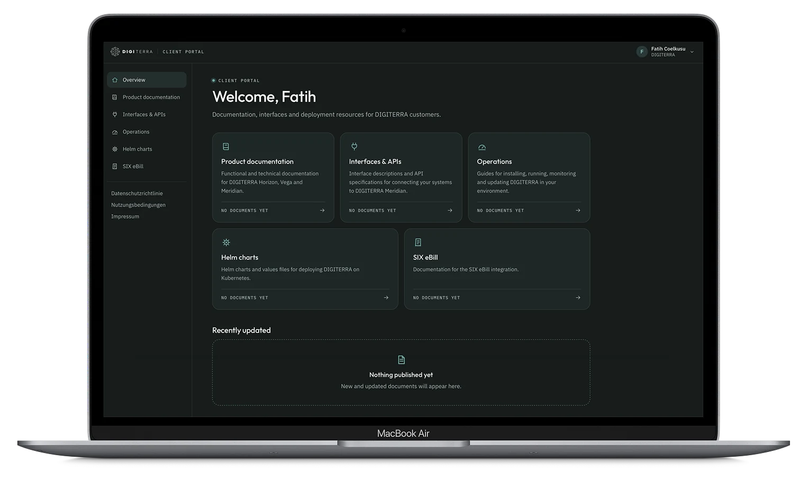
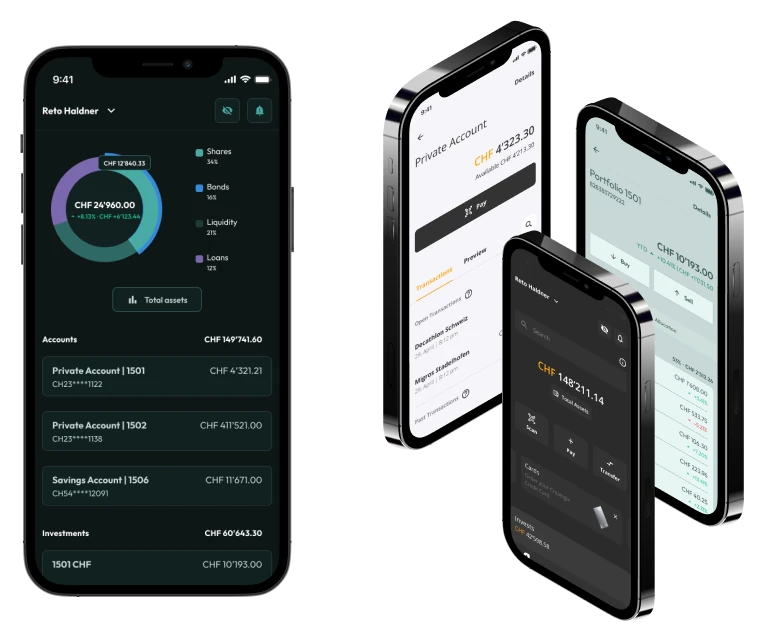
Head of Design · UX/UI & KI · Zürich
Hoi.
Ich bin Fay. Ich mache komplexe Produkte einfach.
Jede Idee beginnt mit einem Strich.
Skizze. Struktur. System.
Ich gebe ihr Form, bis alles klar ist.
Banking. Logistik. Automotive. Öffentlicher Sektor.
Für CREALOGIX AG & DIGITERRA, Kühne+Nagel, BMW Digital, Mercedes-Benz und die Fiducia & GAD.
Vom ersten Strich bis in den Code.
Ich gestalte Designsysteme und Interfaces.
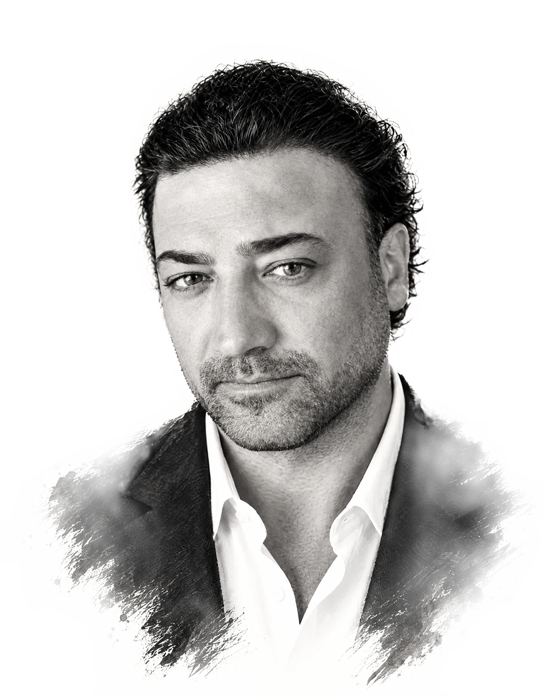
Head of Design · UX/UI & KI · Zürich
Hoi. Ich bin Fay.
Ich mache komplexe Produkte einfach. Und baubar.
00Profil
15+ Jahre UX Design. Heute Senior Product Designer (Head of Design) bei der CREALOGIX AG in Zürich.
CREALOGIX AG, DIGITERRA, Kühne+Nagel, Fiducia & GAD, Pascher+Heinz, Bundesagentur für Arbeit, Capgemini, BMW, Mercedes-Benz, antoni, Weleda
WENIGER KLICKS. KLARERE ABLÄUFE.
EIN SYSTEM, DAS MITWÄCHST.
FÜR ALLE NUTZBAR.
DESIGN UND CODE SPRECHEN DIESELBE SPRACHE.
01Ausgewählte Arbeiten
Vier Projekte aus Banking, Logistik und Automotive. Jeweils mit meiner Rolle und meinem Beitrag.




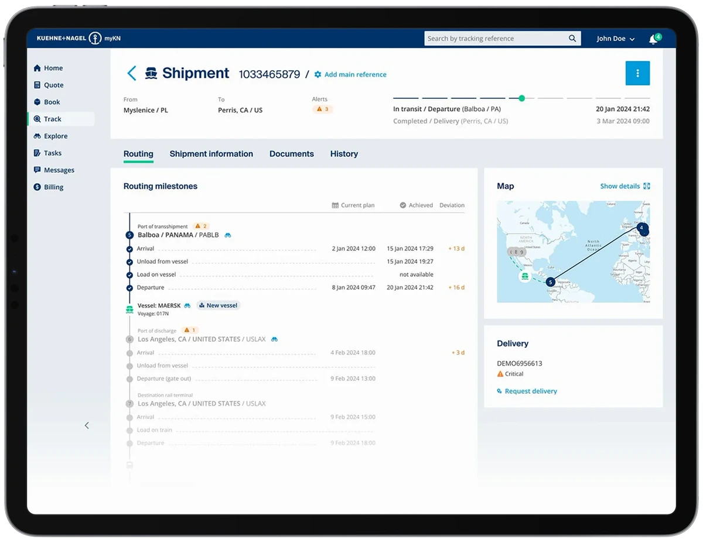
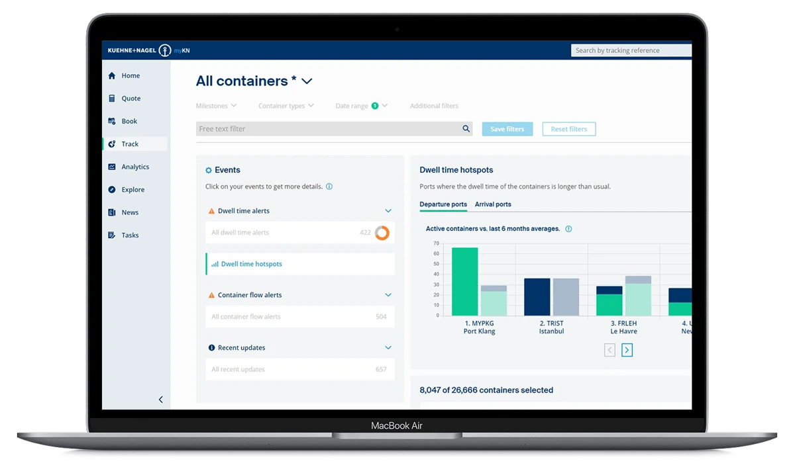
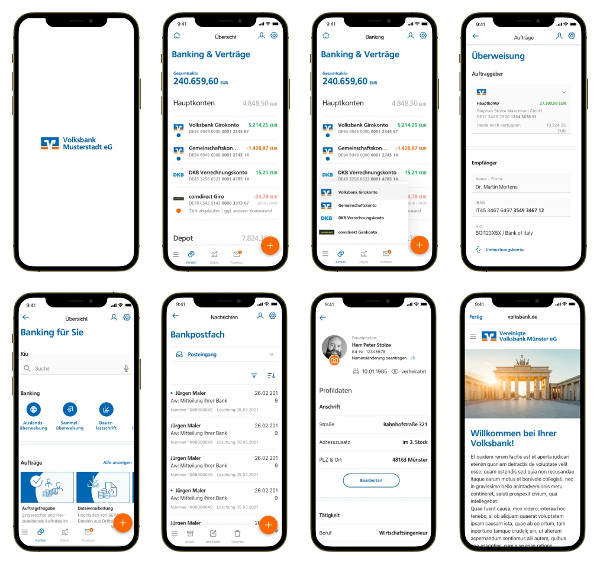
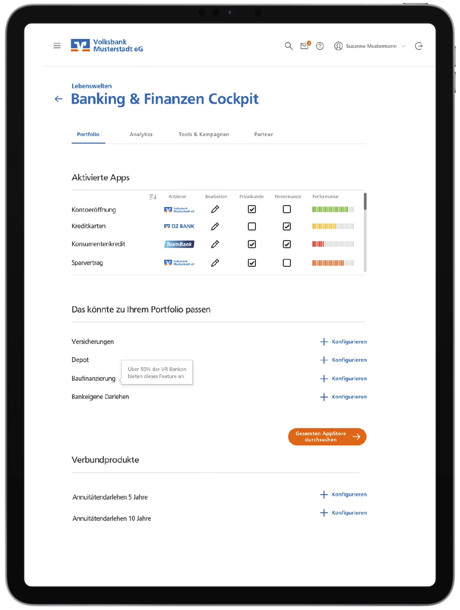
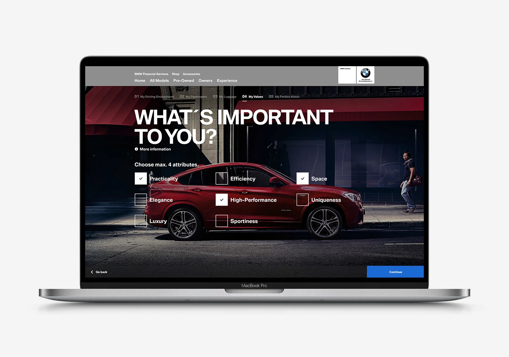
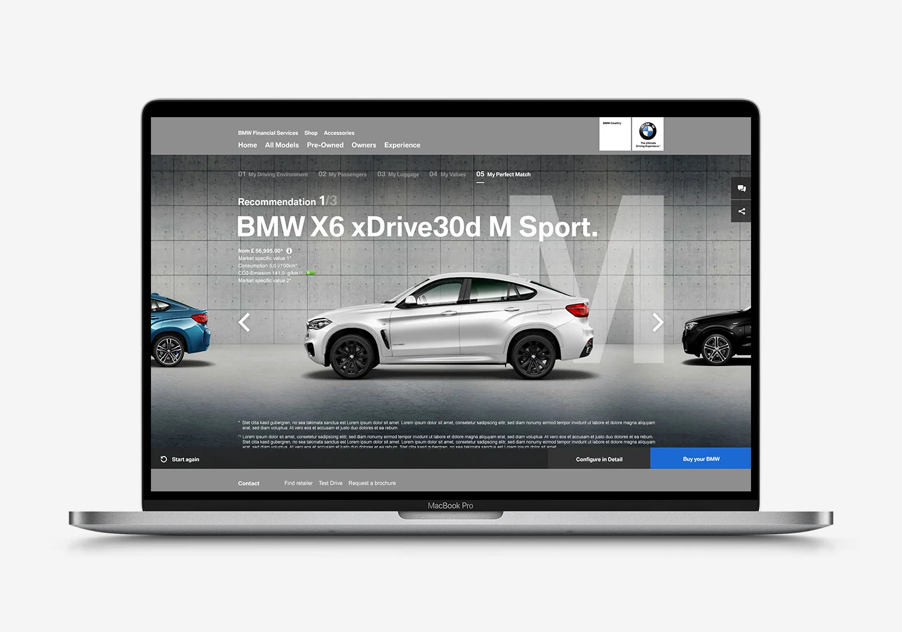
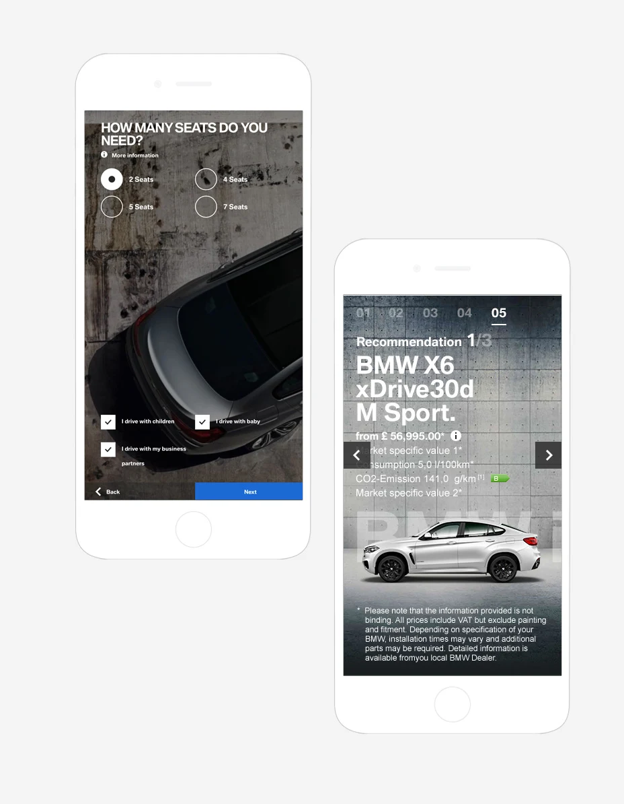
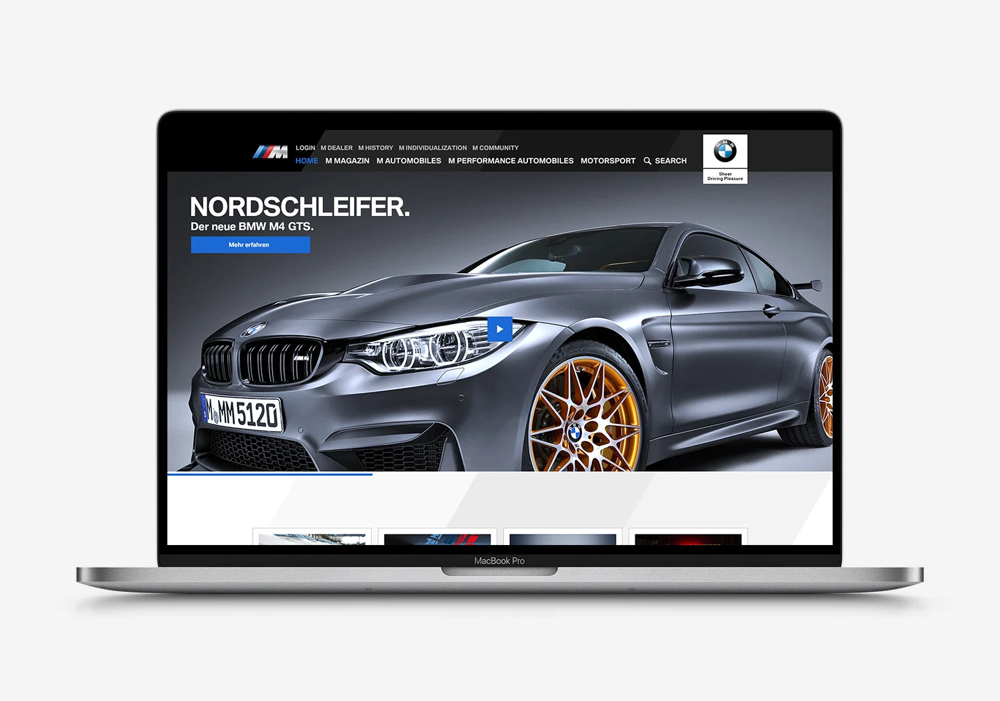
02Arbeitsweise
Nutzerzentriert nach ISO 9241-210
01
Ich frage nach Zielen, Nutzern und Grenzen, bevor ich zeichne.
02
User Flows, Informationsarchitektur und Wireframes. Hier wird es einfach.
03
UI und klickbare Prototypen in Figma, getestet mit echten Nutzern und barrierefrei nach WCAG 2.1 AA.
04
Komponenten, Design Tokens und Specs, die die Entwicklung versteht. Frontends baue ich auch selbst.
03Leistungen
Apps und Plattformen für Web, iOS und Android.
Komponenten, Tokens und Doku, die mit dem Produkt wachsen.
Klickbare Prototypen in Figma und Tests, die echte Antworten liefern.
WCAG 2.1 AA, BITV 2.0 und WAI-ARIA, von Anfang an mitgedacht.
Frontends mit Cursor und Claude, Design Tokens und Komponenten-Bibliotheken.
Kampagnen und Content für Marken wie Mercedes-Benz und BMW.
04Was die CREALOGIX AG sagt
Sein Engagement übertrifft unsere Erwartungen.
Er setzt erworbenes Wissen vorbildlich in die Praxis um und findet sich in neuen Aufgaben schnell zurecht.
Mit seiner äusserst zuverlässigen und genauen Arbeitsweise sind wir vollumfänglich zufrieden.
CREALOGIX AG, Zwischenzeugnis, September 2026
05Über mich
Ich bin UX/UI- und KI-Designer mit über 15 Jahren Erfahrung. Seit 2023 bin ich bei der CREALOGIX AG in Zürich, heute als Senior Product Designer und Head of Design. Zu meinen Projekten dort gehört die DIGITERRA-Plattform.
Angefangen habe ich als Art Director in Werbeagenturen, für Marken wie BMW und Mercedes-Benz. Seitdem gestalte ich digitale Produkte für Fintech, Logistik und öffentliche Institutionen, nutzerzentriert und barrierefrei.
Mein Schwerpunkt sind skalierbare Designsysteme. Frontends baue ich mit KI-Werkzeugen wie Cursor und Claude auch selbst. Ich weiß also, wie Designs gebaut werden, und gestalte Übergaben, mit denen Entwickler gern arbeiten.
Werkzeuge
Methoden
Sprachen
Deutsch und Türkisch (Muttersprache), Englisch (verhandlungssicher)
Stationen
06Fragen
Beides ist möglich. Schreib mir, worum es geht, und ich sage dir ehrlich, ob es passt.
Das ist mein Alltag. Banking, Payment und Behörden haben viele Regeln und viele Beteiligte. Ich mache daraus Abläufe, die Nutzer verstehen und die trotzdem alle Vorgaben erfüllen, auch beim Datenschutz.
Über Komponenten im Designsystem, Design Tokens und klare Specs. Frontends baue ich auch selbst, ich weiß also, was im Code aufwendig wird. Das spart Nacharbeit.
Ich plane sie von Anfang an ein. Für die Bundesagentur für Arbeit habe ich nach BITV 2.0, WCAG und WAI-ARIA gestaltet. Heute ist WCAG 2.1 AA mein Standard.
Manche Arbeiten stehen unter NDA. Im Gespräch zeige ich gern mehr, soweit es erlaubt ist.
07Kontakt
Erzähl mir von deiner Rolle, deinem Projekt oder einem Produkt, das einfacher werden soll.
Oder direkt: info@faydesign.ch